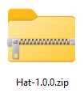
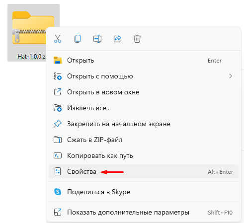
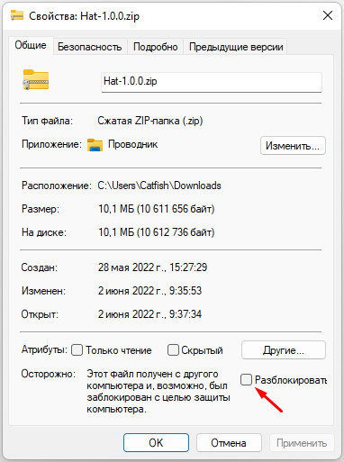
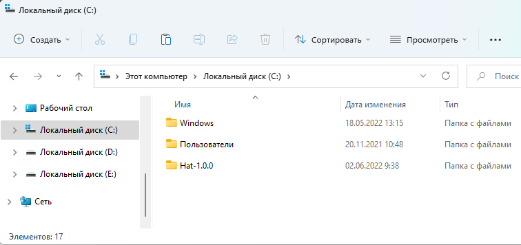
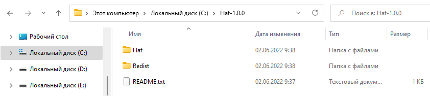
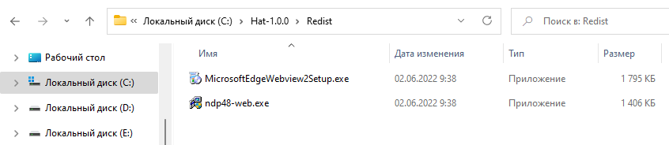
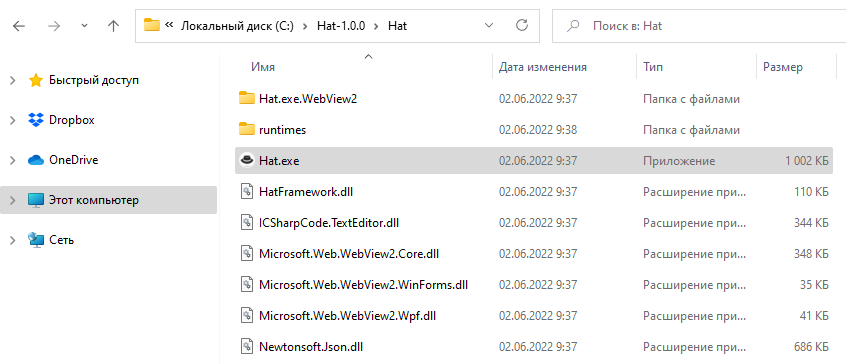

Установка и запуск браузера Hat
1. Скачайте браузер с официальной страницы на GitHub: https://github.com/SomovStudio/Hat/

Прверьте архив антивирусником и если всё в порядке откройте свойства архива и включите флаг "Разблокировать" чтобы система не спрашивала у вас разрешения при каждом запуске браузера.
 
2. Приложение абсолютно портативное и скаченный архив можна распаковать в любое место на жестком диске.
Совет: лучше не устанавливать в папку Program Files иначе придется дать приложению права администратора, распакуйте в корен диска.

перейдите в папку Hat-1.0.0

3. В папке Redist содержатся установщики пакетов Microsoft .NET Framework 4.8 и Microsoft Edge WebView2

4. В папке Hat находится само приложение.

Браузер запускается файлом Hat.exe
Created with the Personal Edition of HelpNDoc: Full-featured Documentation generator